Gallbladder Ultrasound · jamesxxx1997
Preparation, technique, normal values, congenital variants, and wall thickening differential. Distilled from imaging notes.
Preparation & Technique
Preparation
- NPO (fasting) 6–8 hours before exam.
- Fasting ensures the GB is distended and the wall is thin enough to measure accurately.
Technique
- Probe position: right subcostal or intercostal window; scan during deep inspiration to bring GB into view.
- Measurement: max longitudinal + max transverse diameter; wall thickness measured perpendicular to the liver edge (anterior wall).
- Positional maneuvers: left lateral decubitus (LLD) or upright sitting — displaces bowel gas and helps confirm whether a lesion is mobile (gallstone) vs fixed (polyp).
Normal Reference Values
| Parameter | Normal | Abnormal threshold |
|---|
| Size |
Length < 10 cm, width < 4 cm |
Micro-GB max diameter < 3.5 cm (cystic fibrosis / chronic cholecystitis)
Hydrops > 10 × 4 × 4 cm
|
| Wall thickness (fasting) |
≤ 3 mm |
≥ 4 mm = thickened |
Congenital Variants
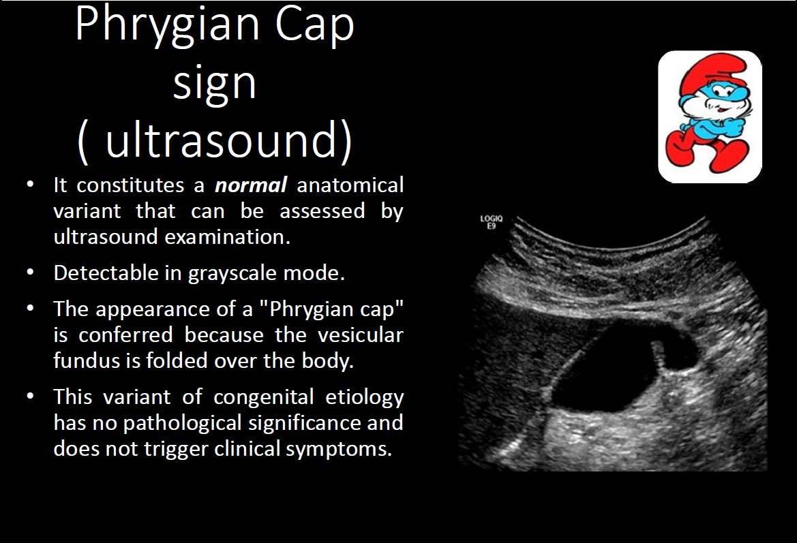
Phrygian cap (most common) — fundal fold/kink. Clinically benign.
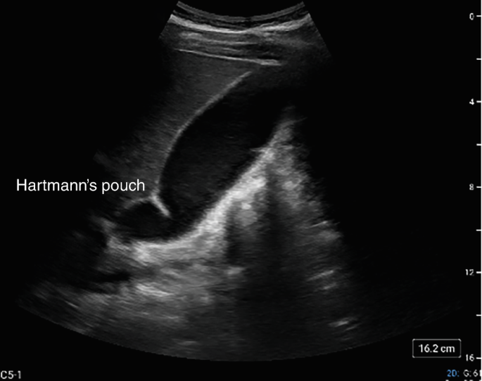
Hartmann's pouch — infundibular outpouching near the cystic duct junction; associated with increased gallstone risk.
Diffuse Wall Thickening
Definition: > 50% of GB wall surface area involved, thickness ≥ 4 mm.
Post-prandial gallbladder physiological
- GB contracts after eating → wall appears thickened.
- Characteristic three-layer wall: outer hyperechoic — middle hypoechoic — inner hyperechoic.
- Key differentiator: history of recent meal; repeat fasting scan resolves apparent thickening.
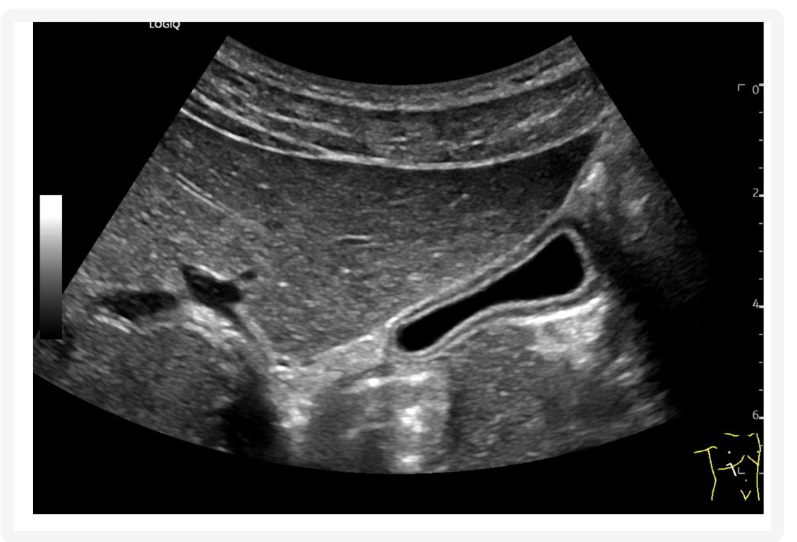
Post-prandial GB — contracted lumen, three-layer wall visible
Cirrhosis with ascites systemic / non-inflammatory
- Ascitic fluid tracks around the GB, producing apparent wall thickening.
- No inflammatory signs; wall thickening is extrinsic, not due to cholecystitis.
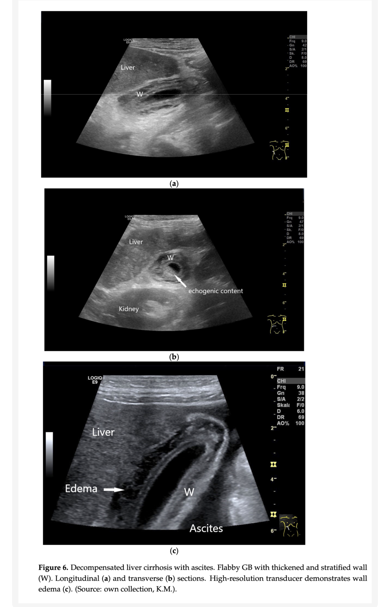
Decompensated liver cirrhosis with ascites. Flabby GB with thickened and stratified wall (W). (a) longitudinal (b) transverse — "echogenic content"; (c) high-resolution showing wall edema and ascites.
Acute viral hepatitis systemic / non-inflammatory
- Wall thickened but lumen is empty (no stones).
- Murphy's sign negative.
- Associated findings: hepatosplenomegaly, lymphadenopathy.
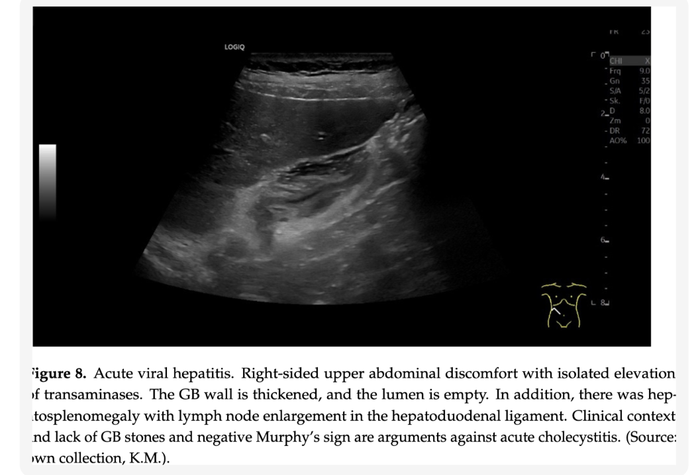
Acute viral hepatitis — GB wall thickened, lumen empty, no stones; hepatosplenomegaly with lymph node enlargement in hepatoduodenal ligament. Murphy's sign negative.
Acute cholecystitis inflammatory
- Wall > 4 mm, irregular and non-uniform layers.
- Wall is characteristically hypoechoic (edema/inflammation).
- Pericholecystic hypoechoic halo — edema/fluid in the GB bed.
- Sonographic Murphy's sign — maximal tenderness directly under probe over GB.
- Severe cases: gangrenous change — wall disruption, irregular inner membrane, intraluminal debris.
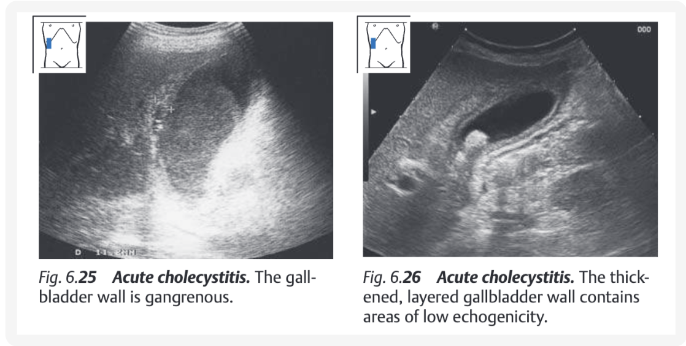
Acute cholecystitis. Left: gangrenous GB wall. Right: thickened, layered wall with areas of low echogenicity (hypoechoic).
Acute vs Chronic key US distinction: acute = hypoechoic wall (edema); chronic = hyperechoic wall (fibrosis).
Chronic cholecystitis inflammatory / fibrotic
- Wall thickened and hyperechoic (fibrosis — opposite of acute).
- GB shrunken (atrophic/contracted); loss of contractility.
- Lumen filled with viscid bile, sludge, or microlithiasis — hard to distinguish GB from adjacent duodenum.
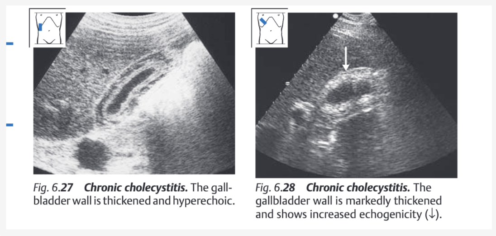
Chronic cholecystitis. Left: thickened hyperechoic wall. Right: markedly thickened wall with increased echogenicity (↓).
- Porcelain gallbladder (late/extreme): calcified wall → thin bright ring with large posterior acoustic shadow; faint posterior wall may still be visible.
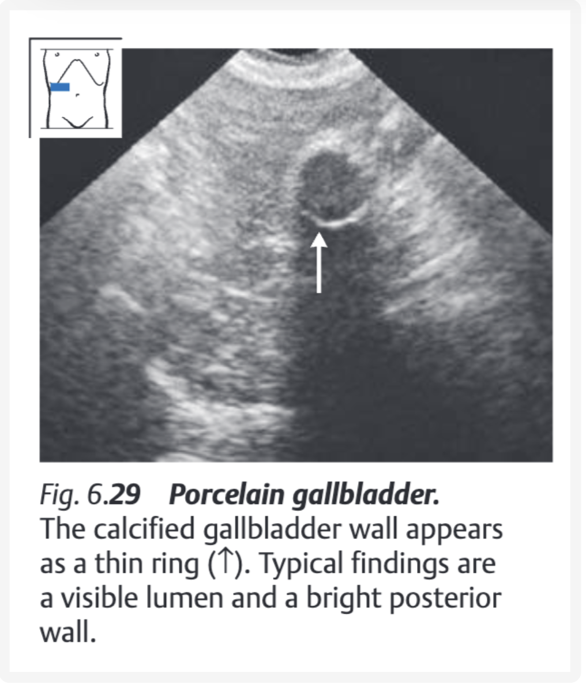
Porcelain gallbladder — calcified wall appears as a thin ring (↑); visible lumen and bright posterior wall.
急性膽囊炎 — 診斷觀念更新（Old vs New Paradigm）
傳統徵象的盲點（別過度依賴）
- 超音波 Murphy's sign：敏感度其實很低（約 33%）。服用止痛藥、年長、糖尿病，或已進展為壞疽性膽囊炎（神經失去痛覺）時，常出現假陰性。
- 膽囊壁增厚（≥ 4 mm）與周圍積液：非特異性。肝炎、心臟衰竭、低白蛋白血症的全身性水腫也會出現，並非急性膽囊炎專屬（見上方 Wall Thickening DDx）。
觀念：單看牆厚與 Murphy's sign 容易誤判 → 應搭配下列高預測價值徵象綜合判斷。
高預測價值超音波徵象（New Paradigm Findings）
張力性底部徵象 (Tensile Fundus Sign) 特異性 96%
- 急性膽囊炎多始於阻塞 → 腔內壓力極高。高壓的膽囊底部向外推擠、甚至使前腹壁變形凸出，即為張力性底部徵象。
- 排除價值：若膽囊正常且未擴張（橫徑 < 2.2 cm），在無穿孔情況下基本可排除急性膽囊炎。
高壓膽囊底部向前腹壁凸出變形（Tensile fundus sign）。
膽囊周圍脂肪高回音 (Echogenic Pericholecystic Fat) 壞疽風險 ×4.6
- 發炎穿透膽囊壁蔓延到大網膜或 Calot 三角脂肪時，發炎脂肪呈高回音 (hyperechoic) — 對應 CT 上的 fat stranding。
- 出現此徵象時，發生壞疽性膽囊炎的機率增加約 4.6 倍。
膽囊周圍發炎脂肪呈高回音。
門診患者的不明原因膽泥 (Unexplained Sludge in Outpatients)
- 健康門診患者極少出現膽泥（通常見於長期禁食或加護病房患者）。
- 若右上腹痛的門診患者出現無陰影的沉積層（膽泥），應高度懷疑膽囊排空受阻及發炎。
嚴重併發症的影像特徵
黏膜回音喪失與不連續 早期壞疽
- 原本正常高回音的黏膜層消失，代表黏膜缺血 — 壞疽性膽囊炎早期、微妙的徵象。
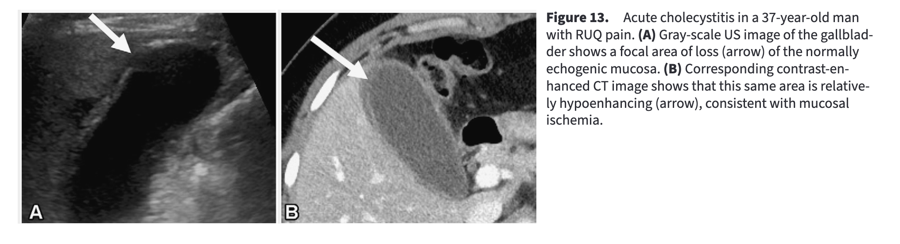
黏膜高回音層喪失 (loss of mucosal sonoreflectivity) — 早期壞疽徵象。
壞疽性膽囊炎 (Gangrenous Cholecystitis) inflammatory
- 除黏膜回音消失外，可見壁內局部膨出 (focal wall bulge)。
- 腔內出現脫落漂浮的黏膜 (sloughed mucosal membranes)。
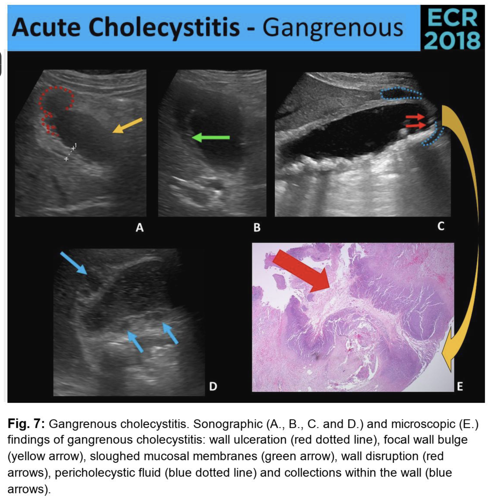
壞疽性膽囊炎 — 腔內漂浮的脫落黏膜膜片 (sloughed membranes)。
穿孔 (Perforation) 確定徵象
- 黏膜出現明顯的不連續斷口，斷口旁有擠出的腔外複雜液體。
- 特別是在膽囊裸區 (bare area — 缺乏腹膜覆蓋，最易穿孔) 發現游離液體時，是膽囊破裂的確定特徵。
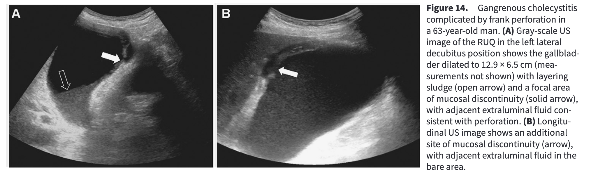
膽囊裸區 (bare area) 穿孔 — 黏膜斷口旁腔外複雜游離液體。
氣腫性膽囊炎 (Emphysematous Cholecystitis) 急症
- 產氣菌感染引起。膽囊壁或腔內非依賴（靠上）部位出現高回音區或高回音弧線。
- 後方拖曳出明顯的「髒陰影 (dirty shadow)」 — 與結石造成的乾淨陰影 (clean shadow) 不同。
膽囊看不太清楚的鑑別（陰影 / WES）
乾淨陰影 vs 髒陰影 — 物理原理
乾淨陰影 (Clean Shadow)
- 成因：結石 (stones) 或鈣化結構。
- 機制：結石是極佳的衰減體 (attenuator)，聲波能量被大量吸收，後方無次級反射 → 形成邊緣清晰、內部漆黑的乾淨陰影。
髒陰影 (Dirty Shadow)
- 成因：氣體 (gas)（氣腫性膽囊炎、充氣腸道）。
- 機制：氣體介面幾乎 100% 反射，聲波來回反彈產生次級反射；儀器誤判為更深訊號 → 後方形成夾雜低回音點、灰濛濛的髒陰影。
WES 複合徵象 (Wall – Echo – Shadow)
用來診斷「膽囊完全被結石塞滿」的專屬徵象。膽囊內充滿結石、幾乎無膽汁時，看不到正常無回音腔，取而代之為三層弧線：
- W (Wall)：膽囊周圍脂肪/肝界面的高回音亮線 ＋ 肌肉層的低回音暗弧。
- E (Echo)：結石表面的第二條高回音亮弧。
- S (Shadow)：結石後方強烈的乾淨陰影。
「亮弧＋後方陰影」的四種鑑別
看到 hyperechoic semilunar image with shadow 時，用陰影乾淨與否 ＋ 是否有 WES 區分：
| 狀況 | 陰影 | WES | 重點 |
|---|
| 充滿結石的膽囊 (Filled with stones) 圖A | 乾淨 Clean | ✅ 存在 | 壁與結石間可見低回音間隙 |
| 瓷化膽囊 (Porcelain GB) 圖B | 乾淨 Clean | ❌ 缺乏 | 壁已鈣化，壁與結石合一，無低回音肌層 |
| 氣腫性膽囊炎 (Emphysematous) 圖C | 髒 Dirty | ❌ 缺乏 | 急症，需結合臨床與抽血 |
| 充氣腸道 (Gas-filled bowel) | 髒 Dirty | ❌ 缺乏 | 可見蠕動 (peristalsis)；膽囊已切除者右上腹常見 |
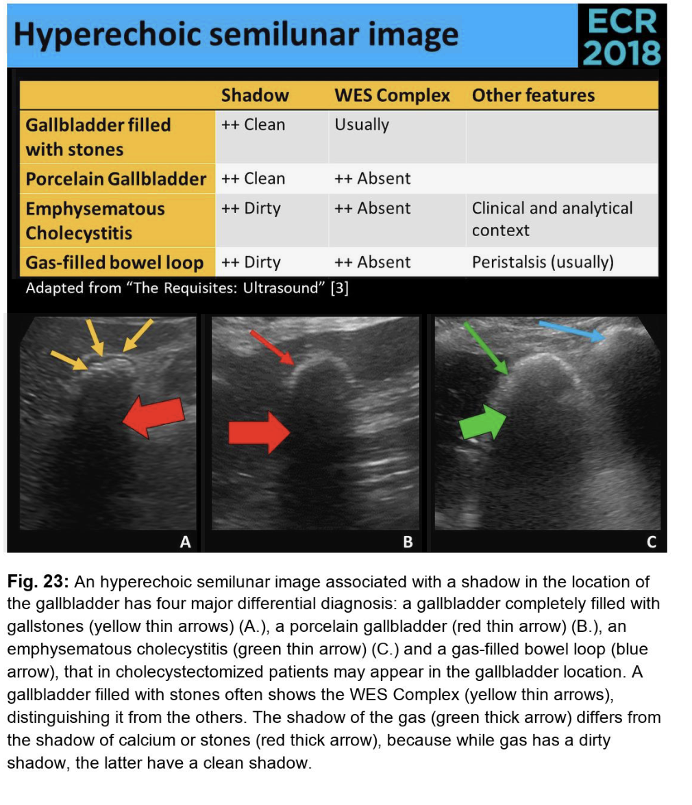
四種「亮弧＋陰影」鑑別（圖 A–C）。
膽泥 vs 微小結石
膽泥 (Biliary Sludge)
- 定義：膽囊/膽管最下沉處的局部高回音物質，無聲波陰影 (no acoustic shadowing)。
- 成分：膽固醇單水合物結晶＋膽紅素鈣顆粒＋黏蛋白膠 (mucin gel)，顯微鏡下無定形。
- 預後：門診無症狀膽泥高達 83% 會自行消退；約 20–24% 進展為結石/膽囊炎/胰臟炎。
- 處置：無症狀 → 觀察等待；反覆症狀 → UDCA 溶解或手術。
微小結石 (Microlithiasis)
- 定義：直徑 ≤ 5 mm，具備聲波陰影 (with acoustic shadowing)。
- 診斷：一般腹超敏感度僅 ~60%；高度懷疑應用 EUS（敏感度 96%）或抽吸膽汁鏡檢（黃金標準）。
- 臨床重要性：「特發性急性胰臟炎」最常見的隱藏元凶；引發胰臟炎的嚴重程度與大結石一樣嚴重，不可因小輕忽。
關鍵差異：有無聲波陰影 — 膽泥無陰影、微小結石有陰影。
膽囊息肉與腫瘤的鑑別
提醒重點：發現不移動、無陰影的凸起物 → 務必打 Doppler！ 內部有無血流是假性 vs 真性腫瘤的關鍵鑑別點。
膽固醇息肉 (Cholesterol Polyps) — 假性腫瘤 (Pseudotumor)
- 佔多數。通常 < 10 mm、多發性 (multiple)，外觀像黏在牆上的球 (ball-on-the-wall)。
- Doppler：無血流訊號。定期追蹤即可。
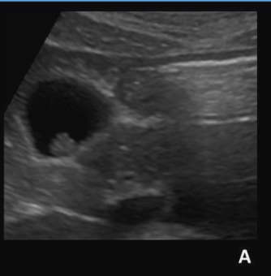
圖 A — 高回音微小凸起 (ball-on-the-wall)，< 10 mm。
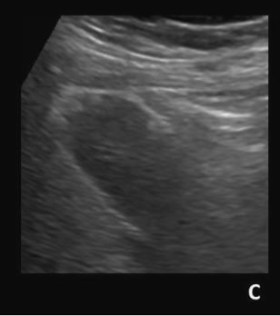
圖 C — 同一膽囊內多發性小病灶 (multiple)。
腺瘤 / 腺癌 (Adenoma / Adenocarcinoma) — 真性腫瘤 (True tumor)
- 具惡性潛力或已惡性。通常 > 10 mm、單一 (solitary)、基底寬廣 (sessile)。
- Doppler：病灶內部可見血流訊號（血管新生）。發現此徵象應強烈考慮手術切除。
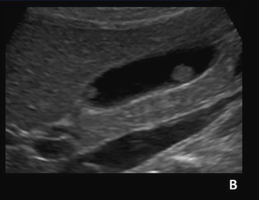
圖 B（腺瘤）— 體積相對較大。
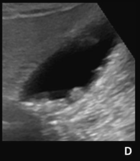
圖 D（腺癌）— > 10 mm，基底寬廣無蒂 (sessile) 大面積附著。
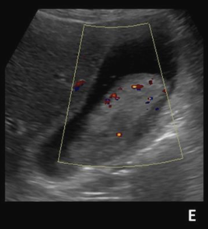
圖 E（腺癌 Doppler）— 病灶內部充滿血流訊號，高度懷疑真性/惡性腫瘤。